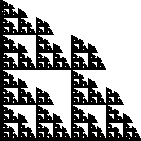
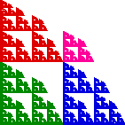

|  |  |
| For self-similar fractals made of N copies, each scaled by the same factor r, the similarity dimension ds is given by | |||
| ds = Log(N)/Log(1/r). | |||
| Now consider the fractal shown on the left. On the right we see it is made of three
pieces scaled by | |||
| Because different r values are involved, the similarity dimension formula cannot be applied. What can we do? | |||
|
Return to the Moran equation.